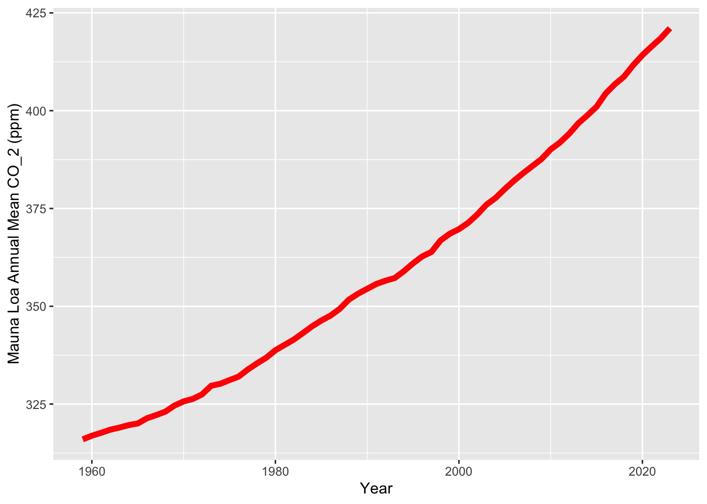
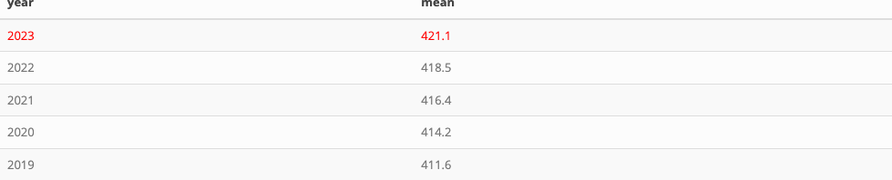

Table of contents
Annual Mean Carbon Dioxide Concentrations 1959-Present
Top Five Annual Mean Carbon Dioxide Concentrations at Mona Loa
Carbon Dioxide Concentrations at Mona Loa Observatory
Author
Adam M. Wilson
Annual Mean Carbon Dioxide Concentrations 1959-Present

Top Five Annual Mean Carbon Dioxide Concentrations at Mona Loa
